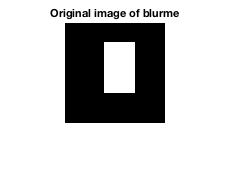
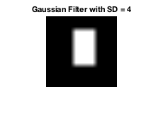
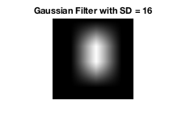
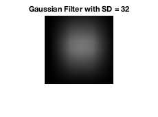
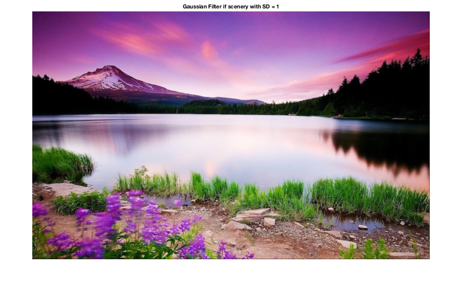
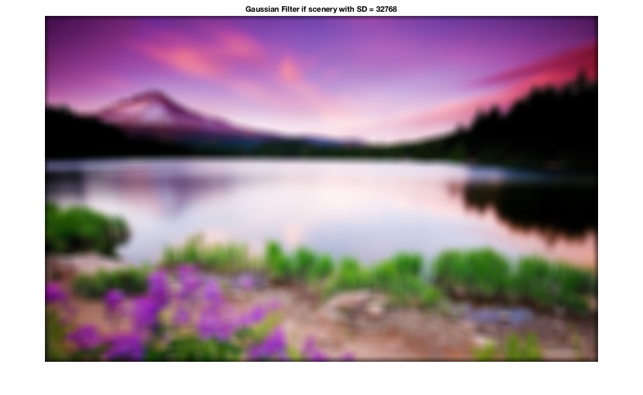
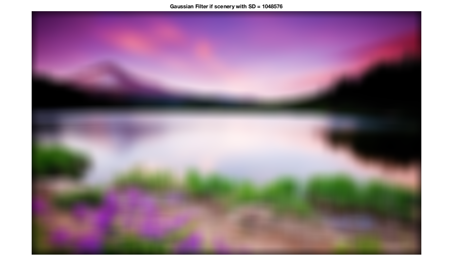
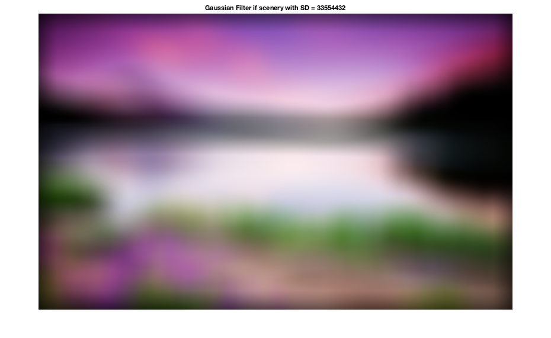

figure(1);
imshow(blurme);
title('Original image of blurme');
sds = [1,2,4,8,16,32];
for i = 1:length(sds)
figure();
imshow(gaussianFilt(blurme, sds(i)));
title(sprintf('Gaussian Filter with SD = %d',sds(i)));
end
fprintf('As the standard deviation increases, the Gaussian filter blurs the\n');
fprintf('white box more heavily. As a result, the white box becomes less defined\n');
fprintf('and smaller. When the standard deviation reaches 32, only a grey smudge\n');
fprintf('remains.');
myimage = imread('scenery.jpg');
sds2 = [1,32,1024,32768,1048576,33554432];
for i = 1:length(sds2)
figure();
imshow(gaussianFilt(myimage, sds(i)));
title(sprintf('Gaussian Filter if scenery with SD = %d',sds2(i)));
end
disp(' Similar to the blurme image, a greater standard deviation value')
disp('blurs the purple lake photo more heavily. In addition, the edges of the');
disp('image begin turning darker with very large standard deviation sizes.')
function [image] = gaussianFilt(image, sd)
gausfilt = fspecial('gaussian', [2*sd, 2*sd], sd);
image = imfilter(image, gausfilt);
end
As the standard deviation increases, the Gaussian filter blurs the
white box more heavily. As a result, the white box becomes less defined
and smaller. When the standard deviation reaches 32, only a grey smudge
remains. Similar to the blurme image, a greater standard deviation value
blurs the purple lake photo more heavily. In addition, the edges of the
image begin turning darker with very large standard deviation sizes.
       